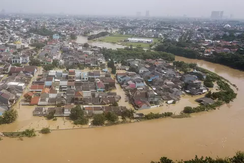

Every time people asked me about where im from, i always said "Im from Bekasi". But if you asked me more specifically, im actually live in Bogor Regency (Kabupaten). I live on the outskirt side of Bogor. It only took me around 15-20 minutes to get to the city center of Bekasi but it took me around 1-2 hours to get to the city center of Bogor. Bekasi City is more like the metropolis area while Bogor Regency is the suburban area. Thats why my whole life is in Bekasi, from schools, hospitals, malls, etc. Fun fact about Bekasi is that it has a lot of shopping malls, 7 of them are located in under 5 km radius, which is A LOT. I like living in Bekasi because it is not as crowded as Jakarta but it still has everything that i need. It has no traffic jams (most of the time) in work hours, since people here mostly work in Jakarta. So it only gets crowded on weekends and holidays.
Ever heard about 2020 flood in Jakarta? Well, my housing complex is one of the most affected area. This housing complex is located near a river and when the river overflowed, it flooded my whole village. The water reached up to 3-4 meters high (literally the whole first floor was submerged) and it took around 2 weeks for everything to go back to almost normal. In that 2 weeks, i couldnt go to school, cant even find foods nearby, fully rely on BNPB and volunteers to get needs. Glad im using PDAM water so i still have water to clean stuff. It was a nightmare and until now, everytime Bogor City heavy rain, i always feel anxious and worried that it will flow into my area and flood again.
